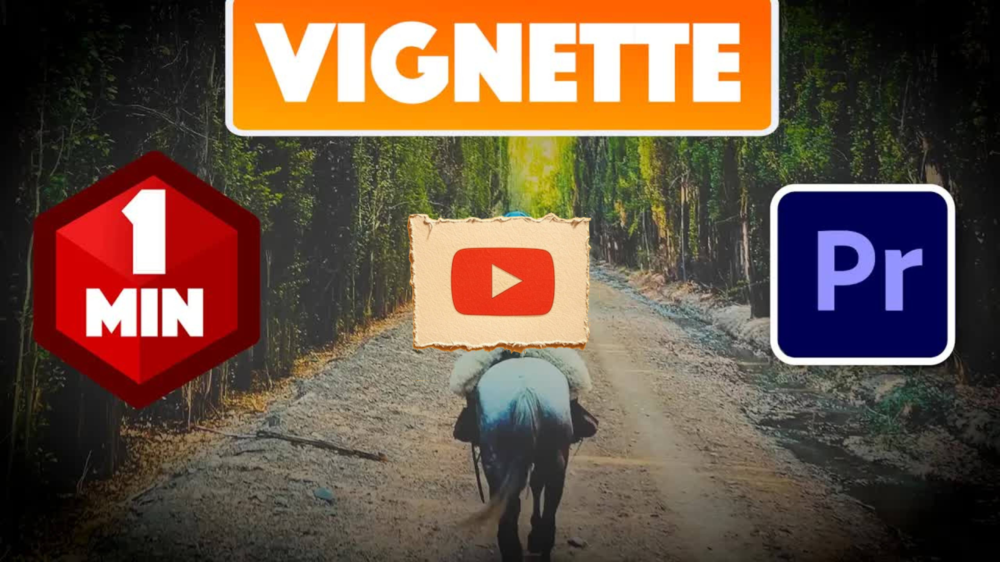

Great Pods
How to Add a Vignette in Premiere Pro 2025
Key Points
Add a video clip to your timeline first
Go to the effects panel
Type "lummetric color" into the search box
Drag the lummetry color effect onto your clip
Open effect controls under lummetry color
Find and open the vignette settings
Increase amount to positive number for white vignette
Decrease amount to negative number for black vignette
Decrease midpoint to make vignette larger
Increase feather to make vignette less defined
Feather adjustment helps soften vignette edges
Midpoint controls vignette size
Amount controls vignette intensity and color
Lummetric color is the key effect for vignettes
Vignette settings are found within the lummetric color effect
White vignettes use positive amount values
Black vignettes use negative amount values
Adjust feather when changing midpoint for better appearance
Full Transcript
Language: en Okay, to get started, I just added a video clip to my timeline, and I like to add a vignette to it. Let's begin by going over to the effects panel and type lummetric color into the search box. Drag the lummetry color effect onto your clip. Then in effect controls under lummetry color, open up the vignette settings. To create a white vignette, increase the amount to a positive number. But if you want a black vignette, decrease the amount to a negative number. Decreasing the midpoint will make your vignette larger. If you do that, you may want to increase the feather to make it look less defined. But yeah, that's it for this one. As always, thanks for watching and see you next time. [Applause]
← All Summaries
Watch on YouTube